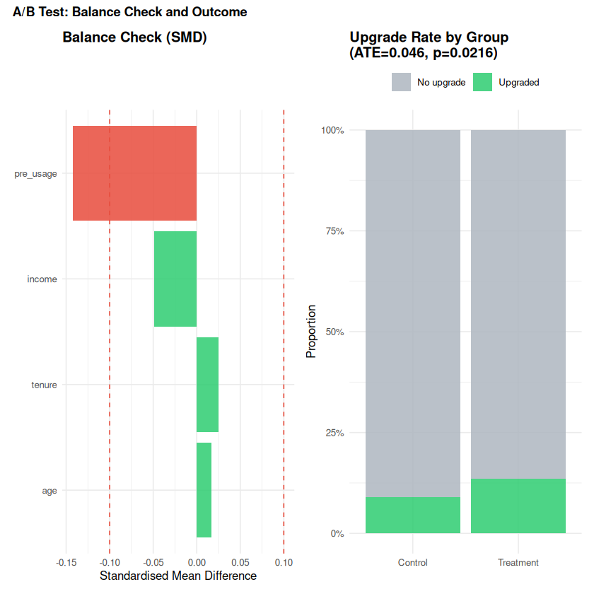
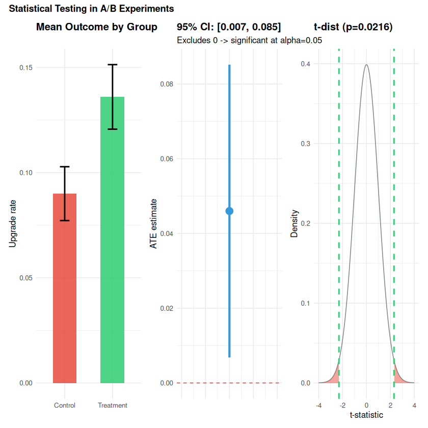
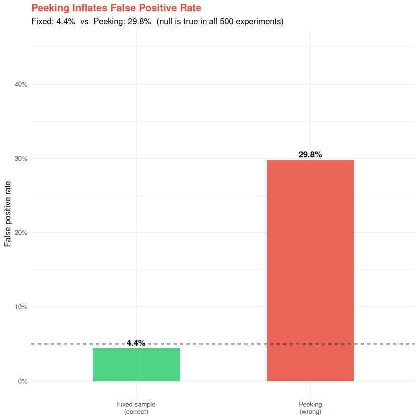

How do you design and analyze experiments?#
Topics: A/B Testing - Randomization - ATE - t-tests - p-values - Confidence Intervals - Power Analysis - CUPED - Peeking
Toy dataset: subscription upgrade A/B test. Users are randomly assigned to see a discounted upgrade offer (treatment) or no offer (control). Outcome is whether they upgrade within 14 days.
SS1 – A/B Testing & Randomization#
What it is#
Gold standard for causal inference – randomization eliminates confounding by design
Randomly assign units to treatment (A) or control (B)
The only systematic difference between groups is the treatment itself
Assumptions#
Random assignment – treatment assigned by chance, not by unit characteristics
SUTVA – no interference between units
No peeking – stopping rule decided before experiment, not after seeing results
Validation#
Balance check – covariate means should be similar between groups
A/A test – run with no real treatment, verify no significant difference
SMD (standardised mean difference) < 0.1 per covariate
Formula#
\(\hat{\text{ATE}} = \bar{Y}_T - \bar{Y}_C\)
\(\text{SE} = \sqrt{s_T^2/n_T + s_C^2/n_C}\)
library(dplyr); library(ggplot2); library(patchwork)
# ATE estimate and t-test
ate_est <- mean(df$Y[df$T==1]) - mean(df$Y[df$T==0])
t_res <- t.test(Y ~ T, data = df)
cat(sprintf("True ATE : %.3f\n", true_ate))
cat(sprintf("Estimated ATE : %.3f\n", ate_est))
cat(sprintf("t-statistic : %.3f\n", -t_res$statistic))
cat(sprintf("p-value : %.4f\n", t_res$p.value))
cat(sprintf("Significant : %s\n", t_res$p.value < 0.05))
# Balance check
covs <- c("age", "income", "tenure", "pre_usage")
balance <- sapply(covs, function(v) {
x1 <- df[[v]][df$T == 1]; x0 <- df[[v]][df$T == 0]
list(diff = mean(x1) - mean(x0),
smd = (mean(x1) - mean(x0)) / sqrt((var(x1) + var(x0)) / 2),
p = t.test(x1, x0)$p.value)
})
bal_df <- tibble::tibble(
covariate = covs,
diff = unlist(balance["diff",]),
smd = unlist(balance["smd",]),
p = unlist(balance["p",]),
balanced = abs(unlist(balance["smd",])) < 0.1
)
print(bal_df |> mutate(across(where(is.numeric), ~round(.x, 4))))
p1 <- ggplot(bal_df, aes(x = reorder(covariate, abs(smd)), y = smd, fill = balanced)) +
geom_col(alpha = 0.85) +
geom_hline(yintercept = c(-0.1, 0.1), linetype = "dashed", color = "#E74C3C") +
coord_flip() +
scale_fill_manual(values = c("#E74C3C","#2ECC71"), guide = "none") +
labs(title = "Balance Check (SMD)",
x = NULL, y = "Standardised Mean Difference") +
theme_minimal(base_size = 10) + theme(plot.title = element_text(face = "bold"))
p2 <- ggplot(df |> mutate(group = ifelse(T==1,"Treatment","Control")),
aes(x = group, fill = factor(Y))) +
geom_bar(position = "fill", alpha = 0.85) +
scale_fill_manual(values = c("#AEB6BF","#2ECC71"), labels = c("No upgrade","Upgraded")) +
scale_y_continuous(labels = scales::percent) +
labs(title = sprintf("Upgrade Rate by Group\n(ATE=%.3f, p=%.4f)", ate_est, t_res$p.value),
x = NULL, y = "Proportion", fill = NULL) +
theme_minimal(base_size = 10) + theme(plot.title = element_text(face = "bold"),
legend.position = "top")
p1 + p2 +
plot_annotation(title = "A/B Test: Balance Check and Outcome",
theme = theme(plot.title = element_text(face = "bold", size = 11)))
True ATE : 0.030
Estimated ATE : 0.046
t-statistic : 2.301
p-value : 0.0216
Significant : TRUE
# A tibble: 4 × 5
covariate diff smd p balanced
<chr> <dbl> <dbl> <dbl> <lgl>
1 age 0.226 0.0168 0.791 TRUE
2 income -1.01 -0.0492 0.437 TRUE
3 tenure 0.848 0.025 0.692 TRUE
4 pre_usage -2.17 -0.142 0.0245 FALSE
{kind=link}

SS2 – Statistical Testing: t-test, p-values, Confidence Intervals#
Key intuition#
p < 0.05 does NOT mean the effect is large or practically meaningful
p > 0.05 does NOT mean no effect – you may be underpowered
Always report effect size AND confidence interval, not just p-value
If violated#
Non-normal, small sample ->
wilcox.test()(Mann-Whitney U, non-parametric)Non-independent observations -> cluster-robust standard errors
Multiple outcomes -> Bonferroni correction or Benjamini-Hochberg FDR
library(ggplot2); library(patchwork)
# t-test details
t_res <- t.test(Y ~ T, data = df)
diff <- mean(df$Y[df$T==1]) - mean(df$Y[df$T==0])
se <- sqrt(var(df$Y[df$T==1])/sum(df$T==1) + var(df$Y[df$T==0])/sum(df$T==0))
ci_low <- diff - 1.96 * se
ci_high <- diff + 1.96 * se
cat(sprintf("ATE estimate : %.4f\n", diff))
cat(sprintf("95%% CI : [%.4f, %.4f]\n", ci_low, ci_high))
cat(sprintf("t-statistic : %.3f\n", abs(t_res$statistic)))
cat(sprintf("p-value : %.4f\n", t_res$p.value))
cat(sprintf("CI excludes 0 : %s\n", ci_low > 0 | ci_high < 0))
# Plots
df_t <- df |> mutate(group = ifelse(T==1,"Treatment","Control"))
p1 <- ggplot(df_t, aes(x = group, y = Y, fill = group)) +
stat_summary(fun = mean, geom = "bar", alpha = 0.85, width = 0.5) +
stat_summary(fun.data = mean_se, geom = "errorbar", width = 0.2, linewidth = 0.8) +
scale_fill_manual(values = c("#E74C3C","#2ECC71"), guide = "none") +
labs(title = "Mean Outcome by Group", x = NULL, y = "Upgrade rate") +
theme_minimal(base_size = 10) + theme(plot.title = element_text(face = "bold"))
# CI plot
p2 <- ggplot(tibble::tibble(x=1, y=diff, lo=ci_low, hi=ci_high),
aes(x=x, y=y, ymin=lo, ymax=hi)) +
geom_pointrange(color = "#3498DB", size = 0.8, linewidth = 1.2) +
geom_hline(yintercept = 0, linetype = "dashed", color = "#E74C3C") +
scale_x_continuous(limits = c(0.5, 1.5)) +
labs(title = sprintf("95%% CI: [%.3f, %.3f]", ci_low, ci_high),
subtitle = "Excludes 0 -> significant at alpha=0.05",
x = NULL, y = "ATE estimate") +
theme_minimal(base_size = 10) +
theme(plot.title = element_text(face = "bold"), axis.text.x = element_blank())
# t-distribution
t_stat <- abs(t_res$statistic)
df_deg <- t_res$parameter
x_grid <- seq(-4, 4, 0.01)
t_dens <- dt(x_grid, df = df_deg)
p3 <- ggplot(tibble::tibble(x = x_grid, d = t_dens), aes(x, d)) +
geom_line(color = "#7F8C8D") +
geom_area(data = ~subset(.x, x > t_stat), fill = "#E74C3C", alpha = 0.5) +
geom_area(data = ~subset(.x, x < -t_stat), fill = "#E74C3C", alpha = 0.5) +
geom_vline(xintercept = c(-t_stat, t_stat), color = "#2ECC71",
linetype = "dashed", linewidth = 0.8) +
labs(title = sprintf("t-dist (p=%.4f)", t_res$p.value),
x = "t-statistic", y = "Density") +
theme_minimal(base_size = 10) + theme(plot.title = element_text(face = "bold"))
p1 + p2 + p3 +
plot_annotation(title = "Statistical Testing in A/B Experiments",
theme = theme(plot.title = element_text(face = "bold", size = 11)))
ATE estimate : 0.0460
95% CI : [0.0068, 0.0852]
t-statistic : 2.301
p-value : 0.0216
CI excludes 0 : TRUE
{kind=link}

SS3 – Power Analysis & Sample Size#
What it is#
Statistical power = probability of detecting a real effect when it exists
Power analysis determines required sample size before running the experiment
Formula (per-arm, two-sided)#
where \(\delta\) = MDE, \(\sigma\) = outcome SD. Halving the MDE -> ~4x the sample size.
CUPED (variance reduction)#
Variance shrinks by \((1 - \rho^2)\) where \(\rho = \text{corr}(Y, X_{\text{pre}})\).
Same power with fewer users. X_pre must be measured before treatment.
Common pitfalls#
Peeking – stopping early when p < 0.05 inflates false positive rate
Multiple testing – 20 tests at alpha=0.05 give 1 false positive by chance
Novelty effect – users behave differently due to newness, not the actual change
library(ggplot2); library(patchwork)
# Base R power.prop.test covers binary outcomes directly
required_n <- function(mde, p0 = 0.10, alpha = 0.05, power = 0.80) {
ceiling(power.prop.test(p1 = p0, p2 = p0 + mde,
sig.level = alpha, power = power)$n)
}
# For continuous outcomes: power.t.test
required_n_cont <- function(mde, sigma, alpha = 0.05, power = 0.80) {
ceiling(power.t.test(delta = mde, sd = sigma,
sig.level = alpha, power = power)$n)
}
# Sample size vs MDE
mdes <- seq(0.01, 0.10, by = 0.005)
ns <- sapply(mdes, required_n)
p1 <- ggplot(tibble::tibble(mde = mdes, n = ns), aes(x = mde, y = n)) +
geom_line(color = "#3498DB", linewidth = 1.5) +
geom_point(data = tibble::tibble(mde = 0.03, n = required_n(0.03)),
size = 4, color = "#E74C3C") +
annotate("text", x = 0.035, y = required_n(0.03) + 300,
label = sprintf("MDE=0.03 -> n=%d", required_n(0.03)),
color = "#E74C3C", fontface = "bold", size = 3.5) +
labs(title = "Required Sample Size vs MDE",
subtitle = "binary, p0=0.10, power=0.80",
x = "Minimum Detectable Effect (pp)", y = "n per group") +
theme_minimal(base_size = 10) + theme(plot.title = element_text(face = "bold"))
# Power curve for our experiment
n_vals <- seq(50, 2000, 10)
powers <- sapply(n_vals, function(n) {
power.prop.test(n = n, p1 = p_control, p2 = p_treatment)$power
})
n_80 <- required_n(true_ate)
p2 <- ggplot(tibble::tibble(n = n_vals, pwr = powers), aes(x = n, y = pwr)) +
geom_line(color = "#9B59B6", linewidth = 1.5) +
geom_hline(yintercept = 0.80, linetype = "dashed", color = "#E74C3C") +
geom_vline(xintercept = n_80, linetype = "dashed", color = "#2ECC71") +
annotate("text", x = n_80 + 80, y = 0.4,
label = sprintf("n=%d", n_80), color = "#2ECC71", fontface = "bold", size = 3.5) +
scale_y_continuous(labels = scales::percent) +
labs(title = sprintf("Power Curve (MDE=%.0f pp, p0=%.0f%%)", true_ate*100, p_control*100),
x = "Sample size per group", y = "Statistical power") +
theme_minimal(base_size = 10) + theme(plot.title = element_text(face = "bold"))
cat(sprintf("Required n per group : %d\n", n_80))
cat(sprintf("power.prop.test() : base R -- no package needed\n"))
p1 + p2 +
plot_annotation(title = "Power Analysis",
theme = theme(plot.title = element_text(face = "bold", size = 11)))
{kind=link}
library(ggplot2); library(patchwork)
# CUPED -- pre-experiment usage as the covariate
theta <- cov(df$Y, df$pre_usage) / var(df$pre_usage)
Y_cuped <- df$Y - theta * (df$pre_usage - mean(df$pre_usage))
var_raw <- var(df$Y)
var_cuped <- var(Y_cuped)
rho <- cor(df$Y, df$pre_usage)
reduction <- 1 - var_cuped / var_raw
t_raw <- t.test(Y ~ T, data = df)
t_cuped <- t.test(Y_cuped ~ T, data = df |> mutate(Y_cuped = Y_cuped))
cat(sprintf("Corr(Y, pre_usage) : %.3f\n", rho))
cat(sprintf("Variance reduction : %.1f%% (theory: %.1f%%)\n",
reduction * 100, rho^2 * 100))
cat(sprintf("ATE (raw) : %.4f p = %.4f\n",
-diff(t_raw$estimate), t_raw$p.value))
cat(sprintf("ATE (CUPED) : %.4f p = %.4f\n",
-diff(t_cuped$estimate), t_cuped$p.value))
# Peeking problem
set.seed(42)
n_sims <- 500
max_n <- 300
fp_peek <- 0; fp_fixed <- 0
for (i in 1:n_sims) {
ctrl <- rnorm(max_n); trt <- rnorm(max_n) # null effect
peeked <- FALSE
for (chk in seq(10, max_n, 10)) {
if (t.test(trt[1:chk], ctrl[1:chk])$p.value < 0.05) { peeked <- TRUE; break }
}
if (peeked) fp_peek <- fp_peek + 1
if (t.test(trt, ctrl)$p.value < 0.05) fp_fixed <- fp_fixed + 1
}
peek_rate <- fp_peek / n_sims
fixed_rate <- fp_fixed / n_sims
cat(sprintf("\nFixed-horizon FP rate : %.1f%% (target 5%%)\n", fixed_rate * 100))
cat(sprintf("Peeking FP rate : %.1f%% (inflated!)\n", peek_rate * 100))
ggplot(
tibble::tibble(
method = c("Fixed sample\n(correct)", "Peeking\n(wrong)"),
rate = c(fixed_rate, peek_rate)
),
aes(x = method, y = rate, fill = method)
) +
geom_col(alpha = 0.85, width = 0.5) +
geom_hline(yintercept = 0.05, linetype = "dashed") +
geom_text(aes(label = scales::percent(rate, 0.1)), vjust = -0.4, fontface = "bold") +
scale_fill_manual(values = c("#2ECC71","#E74C3C"), guide = "none") +
scale_y_continuous(labels = scales::percent, limits = c(0, 0.45)) +
labs(title = "Peeking Inflates False Positive Rate",
subtitle = sprintf("Fixed: %.1f%% vs Peeking: %.1f%% (null is true in all %d experiments)",
fixed_rate*100, peek_rate*100, n_sims),
x = NULL, y = "False positive rate") +
theme_minimal(base_size = 10) + theme(plot.title = element_text(face = "bold", color = "#E74C3C"))
Corr(Y, pre_usage) : -0.006
Variance reduction : 0.0% (theory: 0.0%)
ATE (raw) : -0.0460 p = 0.0216
ATE (CUPED) : -0.0457 p = 0.0224
Fixed-horizon FP rate : 4.4% (target 5%)
Peeking FP rate : 29.8% (inflated!)
{kind=link}

SS4 – Interview Q&A#
What is the difference between statistical and practical significance? Statistical significance: p < 0.05 – unlikely due to chance. Practical significance: effect is large enough to matter. A 0.001 pp conversion lift can be statistically significant at n = 10M but is commercially irrelevant.
How do you handle multiple testing?
Bonferroni: divide alpha by number of tests (conservative, controls FWER).
Benjamini-Hochberg FDR: controls the expected false discovery proportion (preferred when
testing many metrics). In R: p.adjust(p_vals, method = "bonferroni") or "BH".
What is CUPED and when does it help? Controlled Experiment Using Pre-Experiment Data. Residualises the outcome on a pre-period covariate, reducing variance and thus required sample size. Helpful when the pre-experiment covariate is highly correlated with the outcome (rho > 0.5). If rho is near zero, CUPED gives no benefit.
When does an A/B test fail even with random assignment?
SUTVA violated: treated users influence control users (network effects)
Novelty effect: behaviour changes due to newness, not the feature itself
Survivorship bias: only users who stayed are measured (not those who churned immediately)
Imbalanced randomisation with small n: covariate imbalance by chance
Gotchas#
Always determine sample size BEFORE running the experiment
Never change the stopping criterion mid-experiment
Run experiments for full weeks – day-of-week effects are common
Post-hoc segmentation requires multiple testing correction